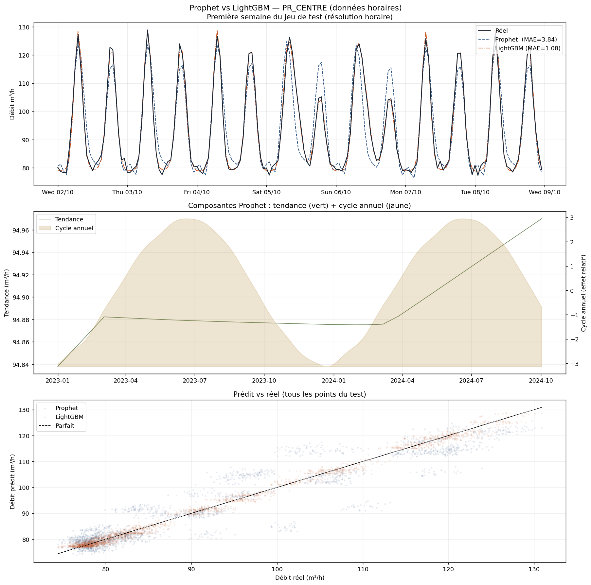

Modèles conçus pour les séries temporelles : ils décomposent explicitement
la consommation en tendance, saisonnalités et effets calendaires,
avec des amplitudes différentes pour chaque composante.
L'idée centrale : additionner des briques
À tout instant t, le débit observé est la somme de plusieurs effets
indépendants. Prophet et SARIMA apprennent l'amplitude de chacun
séparément, puis les recombinent pour prédire.
Chaque S(t) est une
série de Fourier — une somme de sinusoïdes de fréquences et
amplitudes ajustées aux données. Prophet fait ça automatiquement.
Amplitude des composantes pour l'eau urbaine
Les composantes n'ont pas le même poids. Sur de l'eau urbaine typique :
Saisonnalité journalière
~85%
Saisonnalité hebdomadaire
~50%
Saisonnalité annuelle
~30%
Tendance de fond
~8%
Amplitude relative estimée par rapport à la variance totale. Ces poids sont
estimés automatiquement par le modèle — on ne les fixe pas.
Comment Prophet apprend ces amplitudes
Prophet ne calcule pas de simples moyennes par groupe. Il ajuste une
série de Fourier sur chaque saisonnalité : une somme de sinusoïdes
de périodes 24h, 12h, 8h… dont les amplitudes sont apprises par régression.
Un profil avec deux pics (matin + soir) impose une forte composante à 12h
pour sculpter deux bosses distinctes — c'est ce que le modèle découvre seul,
sans qu'on lui précise rien a priori sur la forme du signal.
Le cycle journalier est la composante la plus forte du modèle (±25 m³/h).
Deux pics gaussiens à 7h30 (matin) et 19h (soir), séparés par un creux nocturne profond.
C’est H₂ (12h) qui en est l’harmonique dominante — cf. l’explication séries de Fourier ci-dessus.
Le cycle hebdomadaire représente la variation semaine / weekend (±10 m³/h).
Les jours de semaine sont ~15 % au-dessus du weekend, le dimanche étant le minimum.
Le vendredi marque un léger pic (préparatifs du weekend : lavage, jardinage).
Le cycle annuel capte la saisonnalité climatique (±6 m³/h) :
pic en juillet (chaleur, arrosage des jardins), creux en janvier.
Cette composante est plus faible que le cycle journalier, mais significative sur les bilans annuels.
La tendance est la dérive lente du niveau moyen : ici +5 m³/h sur 2 ans.
Les points gris sont les données brutes mensuelles (avec bruit naturel), la droite verte est la régression linéaire.
En pratique elle peut refléter une croissance démographique, des fuites chroniques, ou un changement d’usage.
Décomposition temporelle : H₁ (24 h) est quasi nul — les deux pics se compensent sur la période fondamentale.
H₂ (12 h) domine car il crée deux bosses par cycle de 24 h. H₃ (8 h) corrige l’asymétrie
de timing (7h30 ≠ 19h) et la différence de largeur entre les deux pics.
Spectre d’amplitude : H₂ est la composante dominante (∼100 %), H₁ presque absent,
H₃ faible mais visible. Le signal à deux pics impose naturellement une forte composante à 12 h.
C'est ce mécanisme qui garantit que le modèle ne suppose pas un impact égal
pour l'heure, le jour et le mois : chaque série de Fourier adapte librement son amplitude.
Si la saisonnalité annuelle est faible dans vos données, ses coefficients convergeront
vers zéro automatiquement, sans qu'on ait besoin de le spécifier.
Illustration : décomposition Prophet
Prophet apprend l'amplitude de chaque composante par régression bayésienne.
La sortie est une prédiction avec intervalle de confiance.
Pour des données avec 3 saisonnalités simultanées (jour + semaine + an)
comme tes débits de PR, Prophet est le choix naturel.
SARIMA nécessiterait d'imbriquer plusieurs modèles ou d'utiliser SARIMAX étendu.
Application à nos données PR_CENTRE
Exécuté
Prophet a été appliqué aux mêmes données simulées que LightGBM,
avec le même découpage train/test (3 derniers mois).
Étape 1 — Préparer les données
Prophet exige deux colonnes exactement : ds (timestamp) et y (valeur).
On agrège à l'heure pour la vitesse (Prophet est lent sur 210 000 points à 5 min).
# 1. Isoler un PR et agréger à l'heure
df_h = df[df['pr'] == 'PR_CENTRE'].copy()
df_h = df_h.set_index('datetime')['debit'].resample('h').mean().dropna().reset_index()
df_h.columns = ['ds', 'y'] # noms imposés par Prophet# → 17 521 points horaires au lieu de 210 241 points à 5 min
Étape 2 — Configurer et entraîner
from prophet import Prophet
from prophet.make_holidays import make_holidays_df
feries = make_holidays_df(year_list=[2023, 2024], country='FR')
m = Prophet(
yearly_seasonality=10, # 10 termes de Fourier pour le cycle annuel
weekly_seasonality=True, # cycle hebdomadaire automatique
daily_seasonality=True, # cycle journalier automatique
holidays=feries, # jours fériés FR
seasonality_mode='additive', # les effets s'additionnent
changepoint_prior_scale=0.05,
seasonality_prior_scale=10,
)
m.fit(train) # train = données avant le 2 oct. 2024
future = m.make_future_dataframe(periods=len(test), freq='h', include_history=False)
forecast = m.predict(future)
# forecast['yhat'] → prédiction centrale# forecast['yhat_lower'] → borne basse intervalle de confiance# forecast['yhat_upper'] → borne haute
Étape 3 — Résultats et comparaison
Modèle
MAE (m³/h)
MAPE
Prophet (additif)
3,84
4,03%
LightGBM (calendaire)
1,08
1,16%
Pourquoi cet écart ?
C'est l'effet du modèle additif.
Prophet calcule composante(dimanche) + composante(juillet) — deux effets indépendants.
Mais un dimanche de juillet a un profil spécifique qui ne se réduit pas à la somme de
"dimanche" et "juillet" séparément : arrosage prolongé, piscines, journée entière active.
LightGBM peut créer une règle si juillet ET dimanche → profil X.
Prophet, en additionnant, ne voit pas cette interaction.

Première semaine du jeu de test. LightGBM (orange) colle au signal réel.
Prophet (bleu pointillé) rate les pics du weekend d'été — exactement à cause de l'hypothèse additive.
Quand Prophet reste utile malgré tout
Prophet a un avantage que LightGBM n'a pas :
il décompose et nomme chaque composante.
Appeler m.plot_components(forecast) donne directement
un graphique de la tendance, du cycle journalier, hebdo et annuel —
très lisible pour expliquer le modèle à des non-techniciens ou pour
un rapport d'audit. LightGBM donne la même précision mais de façon opaque.